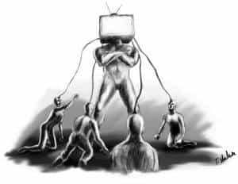

< < < Back
The Media Must Be Dismantled In Order For Freedom To Survive – Return Of Kings
There is an evil wind blowing through America and the world, and the source of the hot air is the media—in all its forms. The news media is rightfully railed on from many corners for its outrageous portrayal of “reality,” but the way the media disease infects the body politic of America is much more insidious than talking heads in cheap suits.
The cancer of the media also permeates Hollywood film, sitcoms, and almost any other form of “entertainment” out there. Whether it’s degenerate whores pushing an agenda of pedophilia in their music videos, or another predictable “GrrlPower” song denigrating men, the music industry also plays its part in molding the American populace into mindless, overworked, sarcastic, sheep with abrasive personalities.
I recently dropped in for a visit to The Matrix because I still have family there, and I must say it was a jarring experience. From inadvertently stepping into a white girl strip club and noticing how frigid and listless the girls were, to making the rounds getting some food at the grocer watching people lumber around like zombies, to eating some slop at a fast food joint surrounded by fatasses, I must say I could not wait to get the fuck out of ‘Murica as quickly as possible. America is not a country as much as it is a coast to coast eatery and shopping mall. Sarcasm is now the national language.
These are things we’ve all heard before, but sometimes points deserve to be repeated. And most of the problem comes from social engineering via the media. This quote from Austrian philosopher Ivan Illich sums up the problems that troubled me as I observed people on my recent trip home, issues that left me terrified that this programmed environment is the blueprint for the entire world if the globalists have their way. (Emphasis mine.)
The machine-like behavior of people chained to electronics constitutes a degradation of their well-being and of their dignity which, for most people in the long run, becomes intolerable. Observations of the sickening effect of programmed environments show that people in them become indolent, impotent, narcissistic and apolitical. The political process breaks down because people cease to be able to govern themselves; they demand to be managed.

A 40 year old film predicted the day would come we would need to stop watching TV
Prevalent almost everywhere I went was the media broadcasting messages of political apathy and consumerism, spraying human beings with so many figurative cans of Raid. Why do people watch this shit nonstop? The Howard Beale monologue from Network perfectly sums up the situation:
So if you want the Truth, go to God. Go to your gurus. Go to yourselves! …We deal in illusions, man. None of it is true!
But you people sit there, day after day, night after night — all ages, colors, creeds. We’re all you know! You’re beginning to believe the illusions we’re spinning here! You’re beginning to think that the tube is reality and that your own lives are unreal.
You do whatever the tube tells you — You dress like the tube. You eat like the tube. You raise your children like the tube. You even think like the tube. This is mass madness, you maniacs! In God’s name, you people are the real thing.
We are the illusion!
Which leads me to my next point as a 15-year veteran and now refugee from the totally corrupt news industry.

If you think the leg crossers are on Fox News for any other reason than sex appeal, you are mistaken…all media runs on sex
News Reporters Are Prostitutes
An old joke when I worked in the news industry was: the management are the pimps and we (the on-air personalities) are the prostitutes. As humorous as that may sound, it’s actually worse than that. The corporations are the pimps and the news networks are their prostitutes.
News has always been biased, but the American media exists for one reason and one reason only in 2016—to further the agenda of the corporate-government complex a.k.a. the globalists. What is the corporate-government complex? It was defined early this year by The New Modern Man as:
Large corporations (of which there are 16 that control over 90% of the products you consume at the grocery store and information you get to see or hear in the media) fund political campaigns and lobby for the government to have more power; in turn the government enacts laws favorable to large corporations. The left blames corporations while the right blames the government, when in reality the two interests work together to subvert the will of the people.
The thought has crossed my mind more than once that the 2016 presidential election has been decided before it even began. So why have the ruse? Because it’s profitable to stir the sheeple up into a frenzy and it serves the interests of the political power structure to keep us divided against one another. As long as black and white people are fighting each other they are not fighting the real evil in the world, which is why the media creates racial problems to create profit.
You will never get any truth from the media when it comes to politics and many other issues.

You are what you watch just as much as you are what you eat
You Are What You Watch
We’ve all heard the old maxim you are what you eat. This needs to be taken a step further: You are what you’re exposed to and what you see on television, whether you realize it or not.
Cracked actually wrote up an informative article detailing how movies affect the human brain. Here are the troubling findings.
- The brain can’t separate fact from fiction
- Stories are invented to control you (they always have been, even before movies)
- The writer of a story always has an agenda (human nature, and in Hollywood, the influence of money)
- Generations of Americans have been raised and educated by pop culture
- Everything in the human brain is a story
See how film might just be one of the best brainwashing instruments ever conceived? When it comes to film being used to push political and social engineering schemes, Cracked wrote:
This isn’t some paranoid conspiracy theory — it’s a fundamental part of how human culture came about. Ask yourself: Why do we go watch superhero movies? After all, variations of these stories about brave, superhuman heroes predate recorded history. We used to tell them around campfires before written language even existed.
They were created as a way to teach you how to behave. The point is, this is why stories were invented — to shape your brain in a certain way. [Emphasis mine.]
In other words, careful what you watch, what you listen to, and especially what women and children are exposed to. It can literally wreck a society, as Hollyweird dreck and Miley Cyrus are wrecking this one.
Treehouse of Horror VI: Attack of the 50 ft. Eyesores contains an important message about advertising and media
The Media Must Die
In short, mass media is the most insidious form of thought and mind control that has ever been conceived. It obviously molds people into the mess of broken humanity we now see coast to coast in America.
How do we fight back against this evil?
Whether through self-inflicted wounds i.e. the fact nobody believes the news channels anymore, or as The Simpsons suggested in Treehouse of Horror VI, when people turn off their television sets the media and its deleterious effects on society will go away. In that Simpsons episode, a cosmic radiation storm caused advertising symbols came to life, and Lisa ran to the ad agency that created them looking for a solution.
Lisa: If your advertising agency created all those giant characters, you must know how to stop them.
Advertising Man: Well sir, advertising is a funny thing. If people stop paying attention to it, pretty soon, it goes away.
Lisa: Like that old woman who couldn’t find the beef?
Advertising Man: Exactly. If you stop paying attention to the monsters, they’ll lose their powers.
The Simpsons metaphor works nicely. If we collectively stop paying attention to the media except to mercilessly call them out on their bullshit, while looking elsewhere for information and entertainment (how about starting by living exciting lives instead of watching overpaid idiots pretend to have exciting lives!) the monsters of social engineering and consumerism plaguing modern society will also lose their powers.
The Network film character Howard Beale gave us a premonition of what we must collectively do.
So turn off your television sets. Turn them off now! Turn them off right now! Turn them off and leave them off. Turn them off right in the middle of this sentence I’m speaking to you now. Turn them off!
Turning off mass media mind control from all centralized sources, including television, movies, and radio, may be the best thing we can do to cleanse the cancer eating Anglo society alive and turning the Western world towards abject tyranny.
I have personally not watched television in over a year since leaving the news industry, and my mind is more focused than it has ever been in my life. I will likely never own another television in my life. Come join me, life is better without mind control in your life.
Read More: 11 Ways To Survive A Media Shitstorm